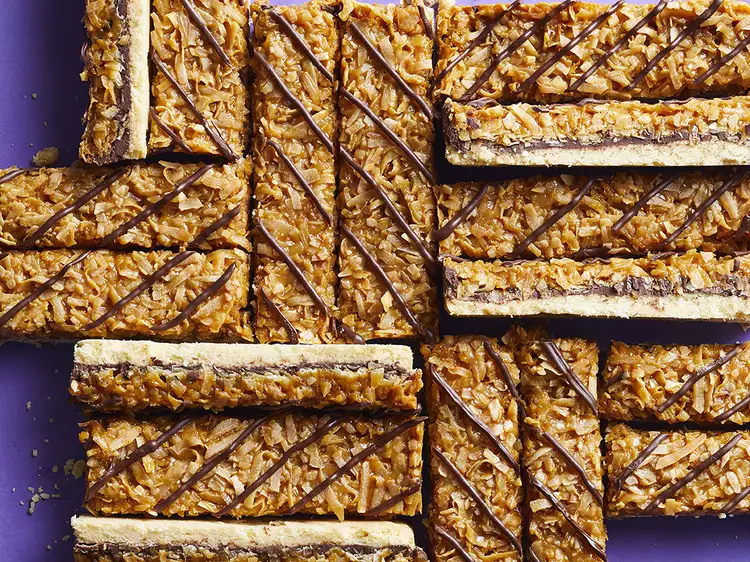

Classic Girl Scout Samoa cookies (Caramel-deLites) in bar shape but with all the flavor of the original.
Preheat the oven to 350 degrees F (175 degrees C). Line a 9x13-inch baking pan with foil, extending foil over edges. Coat foil with cooking spray.
For crust, stir together flour, cornstarch, baking powder, and salt in a small bowl.
Beat butter in a large bowl with an electric mixer at medium speed for 30 seconds. Add both sugars and beat until light and fluffy at medium-high speed. Beat in egg yolk and vanilla extract. Beat in flour mixture (mixture will be crumbly). Press dough onto the bottom of the prepared pan.
Bake crust in the preheated oven until edges are light brown, 10 to 12 minutes.
Meanwhile, combine dulce de leche and milk in a medium bowl. Stir in flaked coconut.
Sprinkle 1 1/2 cups chocolate chips over the hot crust; let stand for 5 minutes until chocolate has melted. Spread melted chocolate over crust in an even layer. Carefully spread coconut mixture over chocolate layer. Return to the oven and bake 10 minutes more. Cool in the pan on a wire rack.
Microwave remaining chocolate chips in a small bowl, stirring once halfway through, until melted and smooth, 30 to 45 seconds. Drizzle melted chocolate over coconut mixture. Chill, covered, until set, about 1 hour. Using foil, lift out uncut cookies. Cut into bars.
Layer bars between wax paper in an airtight container to store. Chill up to 3 days or freeze up to 3 months.